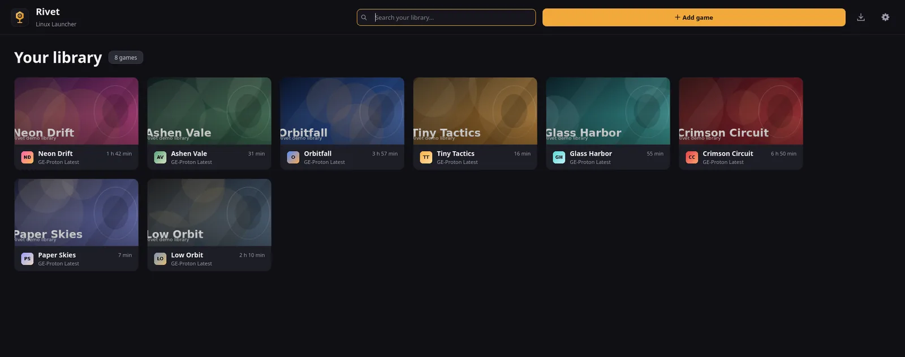
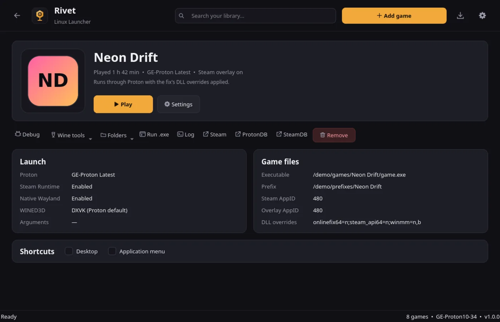

Linux launcher · Qt 6 · AGPL-3.0
One window for the game,
the fix and the prefix.
Rivet is a native launcher for games that need OnlineFix, FreeTP or EOSFix to play online. It reads the fix in the game folder, applies the DLL overrides, picks the Proton build and starts Steam. Then you press Play.
Download the latest build Installation notes x86_64 and aarch64 · SHA-256 sums · rolling builds
- Runtime
- C++20 and Qt 6 Widgets. No JRE, Electron or embedded browser.
- Binary
- One dynamically linked executable per architecture.
- Config
- A single versioned JSON document, validated and written atomically.
- Licence
- AGPL-3.0. Source, issues and builds on GitHub.


The game page is the whole product.
No storefront, no news feed, no recommendations. Open a game and you get the five things that decide whether it launches: the executable, the prefix, the Proton build, the DLL overrides and the Steam AppIDs.
Wine tools, logs, shortcuts and a raw .exe runner sit in the
same row instead of a settings tree.
- NavigationBack arrow, mouse Back/Forward,
Esc,Alt+←/→. - Per-gameProton, prefix, launch arguments, environment variables, DLL overrides, cover and icon.
- SteamAppID and overlay AppID per game, overlay injection, Linux Runtime, native Wayland.
- ExtrasDesktop and application-menu shortcuts, play time, ProtonDB and SteamDB links.
What happens to a fix
Fix formats are not standardised, and each one expects something slightly different from the prefix. Rivet handles the common cases itself.
| File | What Rivet does |
|---|---|
OnlineFix.ini, SteamFix.ini |
Reads RealAppId and FakeAppId into the game's
Steam settings, and flips ExtraProtection off in the file. |
FreeTP SteamFix section |
Patches the section in place and leaves the rest of the file alone. |
| Photon Launcher | Provides Newtonsoft.Json.dll when the fix expects it next
to the executable. |
winmm.txt, dlllist.txt |
Adds every listed override to the prefix, in the order the fix gives. |
| FreeTP “Steam not running” check | A replacement DLL answers the check while Steam is still starting, so the game does not bail out before the first frame. |
| GE-Proton builds | Lists releases from GitHub, downloads, unpacks and removes them from inside the app. Builds for the wrong CPU architecture are filtered out. |
Also in the box
- Adding games
- An extracted folder, a RAR archive, a FreeTP or OnlineFix installer,
or a download from a Hydra/OnlineFix JSON list through
aria2c. - Steam
- Starts Steam, waits for sign-in when needed, injects the overlay and enables the Steam Linux Runtime.
- Wine tools
winecfg, task manager, explorer, regedit, a command prompt, Winetricks, or any.exeinside the game prefix.- Logs
- Per-game output from the last launch, kept until you need to see why something failed.
- Shortcuts
- Desktop and application-menu entries, with the icon lifted from the executable when possible.
- Legacy library
- Existing OFME-Linux INI files are converted on first start. The old files are left untouched.
Install
The release binary links against your system Qt 6, so the Qt runtime has to be present. Pick one method.
Release build
chmod +x rivet-linux-x86_64
./rivet-linux-x86_64Use rivet-linux-aarch64 on ARM64. Every push to
master publishes both binaries with SHA-256 sums.
Nix
nix run github:ne1i/rivet-launcherFlakes must be enabled. The flake is built in CI.
unrar is unfree, so NixOS needs allowUnfree for it.
From source
cmake -S . -B build -DCMAKE_BUILD_TYPE=Release
cmake --build build -j"$(nproc)"
sudo cmake --install buildInstalls the binary, desktop entry and icon. The AUR package
rivet-launcher-git lives in
packaging/aur
and is not published yet.
Dependencies
| Required | Native Steam (not Flatpak or Snap), Qt 6 (Core, Gui, Widgets, Network,
Concurrent, Svg), unrar, 7z, tar,
aria2. |
| Optional | ffmpeg for icon conversion, icoextract for
better icons, winetricks for the Wine tools menu. |
Arch Linux
sudo pacman -S --needed base-devel cmake qt6-base qt6-svg steam unrar 7zip \
ffmpeg icoextract winetricks aria2Configuration
One versioned JSON document holds the settings and every game. It is validated on load and written atomically, so an interrupted save cannot leave you with half a library.
~/.config/rivet/config.json
~/.local/share/rivet/
├── covers/
├── icons/
├── protons/
└── prefixes/
If config.json is missing, Rivet imports
~/.config/OFME-Linux/Games.ini and
Launcher.ini on first start. Covers and icons are copied
to the new data directory, and existing Proton and prefix folders are
reused where they are.
{
"format": "rivet",
"version": 1,
"settings": {
"default_proton": "GE-Proton Latest",
"new_games": { "native_wayland": true, "wined3d": false }
},
"games": [
{
"name": "Example Game",
"executable": "/games/Example/Example.exe",
"prefix": "/games/Example/Rivet Prefix",
"proton": "GE-Proton Latest",
"environment": { "LC_ALL": "fr_FR.UTF-8" },
"steam": {
"app_id": "12345",
"overlay_app_id": "480"
},
"features": {
"steam_overlay": true,
"steam_runtime": true
}
}
]
}Command line
The GUI is not the only entry point. The CLI is useful for shortcuts and scripts, and for seeing exactly what a launch will run.
- rivet
- Open the launcher.
- rivet --launch "Game name"
- Launch a game directly.
- rivet "Game name"
- Same as
--launch. - rivet --list
- List games and their executables.
- rivet --print-command "Game name"
- Print the Proton command and environment without starting the game.
- rivet --version
- Print the version.
--print-command is the quickest way to debug a
prefix that refuses to start. It shows the binary, the environment and
the overrides in the order they will be applied.
Before you use it
Rivet does not host or distribute games, cracks or fixes. You need to own the games you run and comply with copyright, anti-circumvention, contract and local law. Using third-party fixes with Steam may violate Steam's terms and can lead to account restrictions. None of this is legal advice.